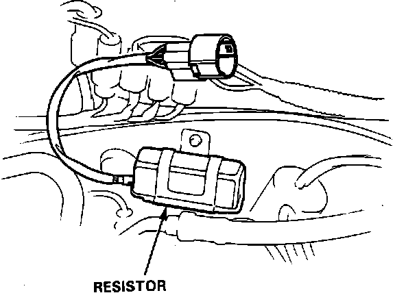
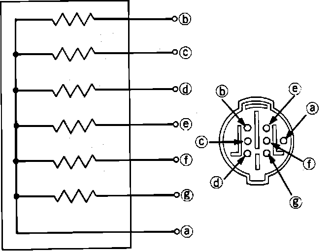
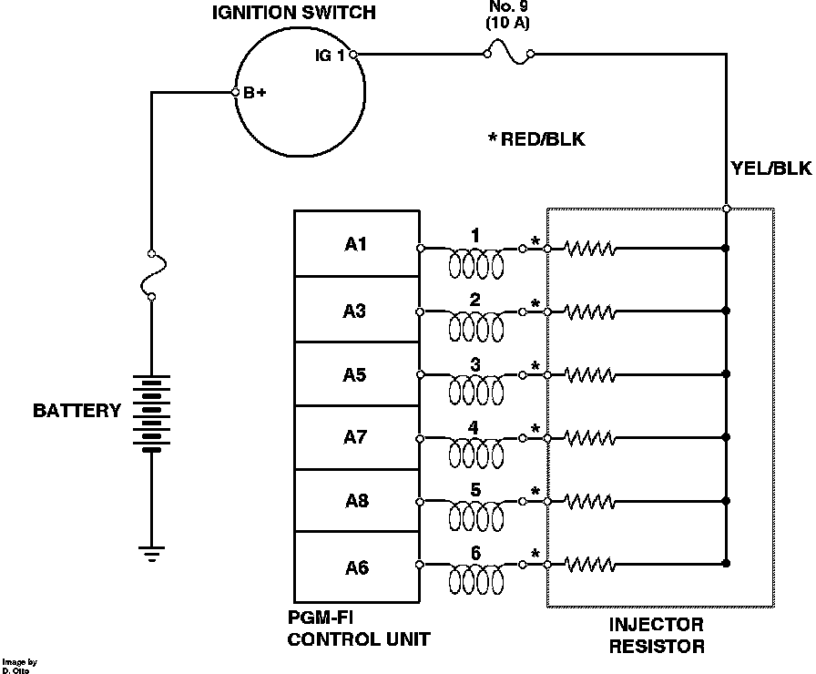

Fuel Injector Resistor: Testing and Inspection
Injector Resistor Location:

RESISTOR TEST
1. Disconnect injector resistor electrical connector.
Injector Resistor Connector Identification:

2. Connect one ohmmeter lead to terminal A on the injector resistor.
3. Check resistance between A and terminals B through G.
All 5 - 7 ohms, injector resistor functioning normally.
Any not 5 - 7 ohms, replace injector resistor.
Fuel Injector Drive Circuit:

CIRCUIT TEST
1. Turn ignition off and disconnect injector resistor.
2. Check voltage with ignition on at YEL/BLK wire of injector resistor harness connector.
Battery voltage, proceed to step .
Not battery voltage, proceed to next step.
3. Inspect fuse No. 9 in under dash fuse box. If fuse is OK check for open wire between injector resistor and ignition switch or faulty ignition switch. End of test.
4. Reconnect injector resistor and measure voltage between RED/BLK wire and ground at each injector with ignition on.
Approx. 9.5 volts, circuit functioning properly. End of test.
Not approx. 9.5 volts, proceed to next step.
5. Repair open RED/BLK between injector resistor and injector.